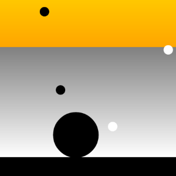

Fable samples
Explore Fable through fun demos!
Fable works great for creating server-side node.js application, client-side browser based applications and even desktop electron-based applications. You can find a number of Fable examples and demos of all kinds in the samples directory on GitHub. Here, is a couple of selected examples with longer explanation.
You can also contribute more examples by sending us a pull request for the samples directory!
Fun and games

Super Fable Mario
Mario clone, based on functional reactive sample written in
Elm. The Fable version is using HTML 5
canvas to render the background and an img tag showing the Mario (using animated GIFs).
You can view the raw source code on GitHub.
Hokusai and fractals
This demo is based on Tomas Petricek's F# Advent Calendar post that explores Japenese art using the (now defunct) Freebase type provider and renders The Great Wave by Hokusai using the Julia fractal. View the raw source code on GitHub.
Ozmo game
Phil Trelford's classic Ozmo game, originally hosted on BitBucket ported to Fable! Shows how to handle keyboard events and use HTML5 canvas. You can also get it (as a JavaScript app) from the Windows Store. View the raw source code on GitHub.

Pacman
Pacman finds himself in a grid filled with monsters... This is the most complex sample here. It involves rendering the maze, AI for the ghosts, user interaction and even playing sound effects. The game has some brief commentary, but if you want to learn Fable, look at the above examples first. The raw source code is on GitHub.
Server-side node.js

Simple static server
Minimal example that shows how to use Fable to create a node.js HTTP server that
hosts static files from the current directory using the serve-static package.
You can view the source code,
packages.json and
fableconfig.json on
GitHub.
Express web framework demo
Example of using Fable to create a web application using Express, a fast, unopinionated, minimalist web framework for Node.js. The raw source code is on GitHub, together with the configuration in packages.json and fableconfig.json.
Something missing?
Send us a pull request!
Do you have a nice demo using Fable? Send us a pull request! We'd love to add more examples of using Fable in reactive web applications, server-side node applications and other domains that rely on JavaScript. You can add demos to the samples folder in Fable repo, or just add a link from this page.